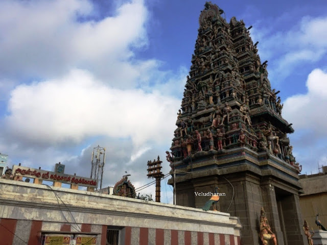

About Kosapet
Kosapet is one of the oldest localities in Chennai, Tamil Nadu. It is famous for its traditional pottery community and is also known as Kuyavar Pettai, which means "Potters' Colony". Every year, many artisans make beautiful clay idols and pots, especially during Vinayagar Chaturthi.
